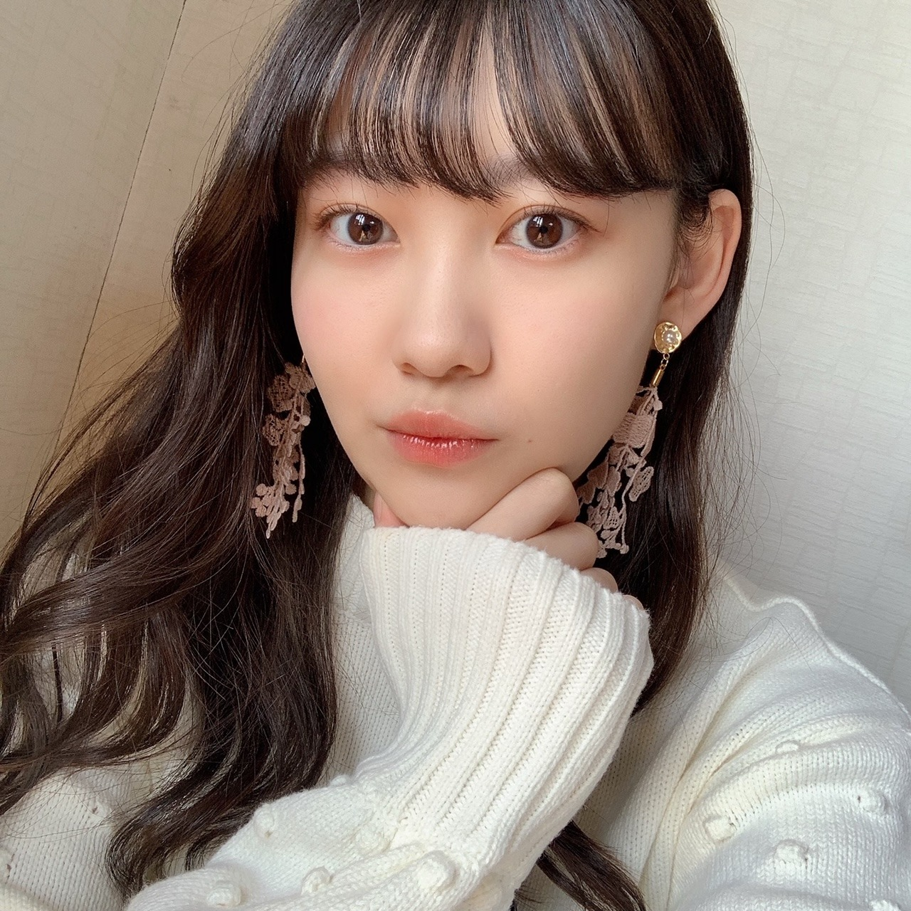

2020/1116Monまつです。 松尾美佑
最近みかんが美味しいです。
2個だって3個だって食べれちゃいます。
まだまだかな。？
千葉県出身
高校2年生
16歳
最近前髪が言う事を聞いてくれなくて悩んでいます(˘･~･˘)
松尾美佑です¨̮
前髪が言う事を聞いてくれないのも本当に大変なんですけど、
それよりも大変なのは2WAYのヘアアイロンが壊れちゃったことです...！！！
(˘･~･˘)(˘･~･˘)(˘･~･˘)
困った困った。
大変です皆さん、。
私、やっちまいました。
今携帯落としたら画面割れちゃいました...
あぁぁぁぁぁぁあああ。
しかも内カメの所にもヒビ入っちゃって、
写真撮る時モヤモヤが写っちゃうようになっちゃいました...( ᵕ ᵕ̩̩ )
次のブログの写真はモヤモヤかもしれないです...( ;ᯅ; )

まだ携帯が割れてない頃に撮った写真(∵)
この時の彼女は次の日携帯が割れるなんて思ってもいないですよ。という表情をしています。
✽ イルミネーション見に行きたいー？
行きたいです( ᐛ)
ちょっと前までは小さな電気の集まりを見て何が楽しいんだろうと不思議だったんですけど、めっちゃ綺麗ですね
気づけて良かった！
✽ 朝寒い時に起きるコツってある？？
私も知りたいですほんと(´◔‸◔`)
寒くなくても起きられない。重症です。
アラーム10分おきに掛けてるのに。
✽ ミュウちゃんは冷え性ですか？
冷え性だったらなにか対策はしてますか？
指先が冷たい系の人間です。
心は暖かいよ？と思いながら生きています。
動く！お風呂！毛布増やす！
✽ 第二言語学ぶなら何語が良い？
最近凄い英語話せるようにしたいなって思います。
今日の夢では海外の方に
「このボールペンは4色ボールペンだからあなたの好きな色を4色選ぶことが出来ますよ。」って単語をつなげた英語で説明してました。
そしたら彼は
「でもそれだと黒が無いから使えないよ」と言うので、
「いえいえ、それはあなたが黒も選べばいい話じゃないですか。」と返しました。
✽ 最近よく聴く曲ありますか？
聴くっていうか、歌うのはAimerさんの『カタオモイ』が多いです。
オーディションの時に歌ったんですけど、久しぶりに無意識にぽそぽそ歌っていたら歌詞があやふやになっちゃってて、(柚菜ちゃんが一緒に歌ってくれて思い出しました☺︎)
思い出したい！って思ってしばらく歌っていたらまたハマりました。
本当に可愛い歌詞と綺麗な音の曲です。
はいっ！

ぴーす
るなちゃん〜
今はねー、んー、
チーズ食べたい~₍ᐢ.ˬ.ᐢ₎
明日は〜
なお〜〜〜〜〜〜〜〜
豚汁は美味しいねぇˊᵕˋ

太陽が眩しい...！！！
昨日の乃木坂工事中で26枚目シングルの選抜発表がありました。
初めて選抜発表という場のいつもとは違う空気を体感しました。
真佑ちゃん、レイちゃん初選抜おめでとう！
さくらちゃん、かきちゃん、あやめちゃん、
5人を応援してます！
少しでも頼れる人間になれるように頑張ります。
これからの乃木坂46の力になれるように、少しでも必要だと思って貰えるような人間になれるように、
私も精一杯自分と戦いながら頑張ります。
これからもよろしくお願いします！

太陽に勝った！！
今日のタイトルはレイちゃんが決めてくれました〜
また5日後！
ミュウでした¨̮
ばいっっっっっっっ( Ꙭ )/''

PROFILE
新4期生リレー
202104
| SUN | MON | TUE | WED | THU | FRI | SAT |
|---|---|---|---|---|---|---|
| 1 | 2 | 3 | ||||
| 4 | 5 | 6 | 7 | 8 | 9 | 10 |
| 11 | 12 | 13 | 14 | 15 | 16 | 17 |
| 18 | 19 | 20 | 21 | 22 | 23 | 24 |
| 25 | 26 | 27 | 28 | 29 | 30 | |

コメント(202)
ミュウちゃんのこと応援してます。
頑張れ✊
最近みかんがおいしくなりましたね。ほんとに２～３個はパクパク食べれちゃう。
携帯割れちゃったの ( ;∀;)1番辛いやつやないか。今度の写真は敢えて外カメラで撮ってみてよ！wどんな感じになるんかw
26枚目シングルの選抜が発表されたね。同期の子が初選抜になってみゆちゃんも嬉しいと思うし、4期生が好きな僕もとっても嬉しいです☺︎ みゆちゃんもこれからシングルを重ねていくうちに絶対に選抜にすぐ入れるようになると思う！あんまり言ってもプレッシャーになっちゃうかもだけどのんびりみゆちゃんの成長を見ながら応援していきたいので自分のペースで無理のないように頑張ってね☺︎
そして！今回から！イベント参加？？？なのかな？
遂に待ちに待ったイベントだからみゆちゃんとお話出来ることを本当に楽しみにしてる！たくさん券とって参加するかもだからよろしくね！！
今回はこの辺で！あ、レイちゃんがブログのタイトル考えたからみかんの話で始まったのかな？wそんなこともないかw
また、5日後にオアイシマショウ☺︎
かわいいよ(*´ω｀*)
もっと松尾ミュウ感を感じたい病かな？
ミュウ感が足りない気がしました。。。
贅沢ですね。
慣れは怖い…
自撮り、雑誌のオフショットですか？
スゴくメイクも、ヘアメイクも過去最高！
って感じてうれしいです。
ありがとう
また５日後に
喜章（よしあき）
久しぶりのコメントになっちゃいました…（ ; ; ）前回のブログで衣装の質問にお返事くれたのすーーーーごい嬉しかった！！かなり前に質問したのに答えてくれてありがとう大好き♡
そしてそして今回も可愛いお写真をありがとう(*´꒳`*)全部可愛い
初めての選抜発表お疲れ様でした☺︎ いつか美佑ちゃんの名前が選抜発表で呼ばれる日がくるようにこれからも応援していきます。乃木坂46の新たな戦略として輝く美佑ちゃんがこれからも楽しみです(*´꒳`*)
☆（コメントが久しぶりになってしまったけれど）コメントする方の名前覚えてくれてたりするのかなぁ(´ｰ｀)
☆読書のお話を前にしてたと思うけど、漫画とかは読んだりする？
☆最近のメイクのポイントがあれば教えてくださいっ☺︎
太陽に勝った美佑ちゃん最強だ〜！
体調には気をつけてね…！
また5日後に笑顔で会いましょう〜
イェーイv(・∀・*)
イェーイv(・∀・*)
ﾜｧ───ヽ(*ﾟ∀ﾟ*)ﾉ───ｲ
携帯落としちゃったの...
\( ///Д///)/ｲﾔｱｱｧｧｧｧｱｱｱｧｧｧｧｱｱｱ!!!!
選抜発表されてたネ!!
そのうちミュウミュウちゃんも...!!
インカメラは使用できません。
薄くなくて良いから、耐熱性能と放熱性能を考えて製造してほしいものです。
それと、昔のようにバッテリーを交換できるように。
最近のスマホは買い換える気になりません。
とは言え、もうバッテリーが限界かも。
(>_< )( >_<)
夢の中って、いろんな事出来るからいいよね！
♡♡♡
質問です！
冬服買いましたか？
おすすめの洋服のブランドとかありますか？
スマホ割れたの悲しすぎるね...
4期生の5人の初選抜おめでとう！！
私は、美佑ちゃんが選抜入ると信じてますから！！今回はダメかもしれないけど、次があるから、それまで私は応援しますよ！！
26thで握手会あったら美佑ちゃんのところ行くから！！
質問！
インドカレー好きですか？？
今日も大好きやで！！
更新楽しみにしてた〜
質問します！
今何してますか？
好きな漫画はありますか？
コーヒーはブラック飲めますか？
パソコンのタイピングは得意ですか？
答えてくれたら嬉しいです！
また5日後の更新楽しみにしてるで〜
更新ありがとう！
アイロンも携帯も大変だったねー( ；∀；)
両方とも買わないとだね、、、
きれいな美佑ちゃんの写真見たいし(^▽^)/
Aimerさん、自分も好き！
この季節は「コイワズライ」よく聴いてます！
美佑ちゃんのカタオモイ、いつか聴けたらいいな♪
初の選抜発表、いろんな思いがあっただろうけど、いつも応援してるからね！
4期生ライブ楽しみ！
じゃあまたね！
今日も今日とてかわいすぎるみゆちゃんに癒される(っ´ω`c)
スマホの画面って割りがちだよね〜( ´･ω･`)ﾜｶﾙ
その日1日テンション下がるからつらい、
柚菜とカタオモイ歌ってただって？それ聴きたい！柚菜とみゆちゃん推しだから俺得でしかない！！
またねーヾ(｡･∀･｡)
大人になったら本当に乃木坂のイメージにピッタリハマりそう！
4期生の活躍に期待してます！
あの時の絶望感と言ったら、、、
そんな事起こる前の、ミュウちゃんと言ったら、あったかい陽の光に包まれていて、とても綺麗ですね！笑
そういう日もあるよ〜〜！
お元気でね。
夢もなんだか不思議ですよね！笑
ではまたね！
最後に質問しときます！
○クリスマスツリーは飾りますか？
早くまつの選抜の姿が見たいです
お体に気をつけて頑張ってください
みゆ！
やっほー！
ひろき(Yandji)です☺️
ブログ更新ありがとー！！！
質問タイムー！！！
4期生ライブの注目ポイントあったら教えて☺️
また、コメントするね！
では、またねー！
ひろき(Yandji)より
不幸なこと続きだったんですね…ヘアアイロンにスマホって日常的に使う者だからこそ使えなくなると、有り難みによく気づかされたりするんですよね〜。丁度良い機種変更時期だと思って、思い切ってスマホ変えてみるのも良いかもしれないね！
同じく4期から初選抜が出てきたね。おそらくこれからも4期から選抜メンバーが出てくる新時代に期待を馳せながら、ミュウさんが笑顔で活躍できるように願ってるよ！26thシングルも期待大！
また5日後に！お疲れさん！
ネットに入った 10個くらいの SかSSサイズの みかん
買ってきた日に 半分くらいは 食べてしまうな 笑 。。
選抜発表はね.. その場にいたら ドキドキだろうね..
今は 一つ一つ積み重ねて 呼ばれた時 発揮できるよう
来月の ４期生ライブでも パフォーマンスを磨いて
自分の出来ることの 幅を広げて 頑張りましょう 。。
夢を叶えるための努力は 必ず いつかどこかで実に
乃木坂工事中での26枚目シングル選抜発表があったけど、実は今まで発表は、見ないようにしてました。
みんなのことが好きなので、選抜発表は見てられないです。
選ばれる本人達の緊張は相当なものだと思います。
真佑ちゃん、レイちゃん、さくらちゃん、かきちゃん、あやめちゃんの5人は4期生ライブとかもあって大変かもしれないので、ミュウちゃんも支えてあげてくださいね。
じゃ、またね。
そして冷え性拾ってくれてありがと(笑)
俺も末端冷え性なんだけど、おんなじこと言ってる。
「心は暖かいって」(笑)
ここ最近寒くなってるからね、風邪とかにも気をつけてね！
そして、シングル発表ありましたね！
これまでライブなどの活躍を観てきましたが、ミュウちゃんが初めて乃木坂の作品の中で活躍出来ること、本当に嬉しく思っています。
唯一無二のミュウちゃんの場所になります。
それはどんな場所でも特別な場所だと思います。
ライブで観れた素敵な姿、今回の作品でもそれをそのままミュウちゃんらしく自然体で見せてくれたら、もっともっと沢山の方にミュウちゃんの良さを知って貰えると思います！
楽しみにしてますね！
それでは、くまくまでしたっ！
ブログ更新ありがとう！
今回のブログも楽しみにしてました！
アイロンに携帯にと色々あったみたいだね泣
画面と内カメにヒビ入っちゃったのか…｡
モヤモヤの写真でもしっかり見るよ！
使いづらいかもしれないけど､早めに交換したり出来ればいいね｡
英語話せるようになりたいよね～
大学生の時に第二外国語でドイツ語を履修してたんだけど､今じゃ全然分からない笑
たぶん数字も充分に言えない←
英語話せたら色々視野も広がりそうだよね！
そして､昨日の乃木中では26枚目の選抜発表があったね｡
テレビで見ていても緊張感が伝わってくるから､実際はもっと緊張感に満ちているんだろうな｡
もちろん､ミュウちゃんを応援するし､ミュウちゃんを好きな気持ちは変わらないよ！
いつかミュウちゃんが選抜に入る時を楽しみにしてるし､その時は一緒に喜びを共有しよう！
次のシングルの期間もミュウちゃんらしく､楽しんでね！
最後に質問！
ノギザカスキッツ ACT2が始まったけど､お話した先輩メンバーっていますか？
今回も素敵なブログをありがとう！
次回も楽しみにしてるね！
それじゃまた！
やっちまったね！
みゆちゃん今日も可愛いです。
みゆちゃん今日も１日お疲れ様です。
今日はお仕事でした。
今日は凄く忙しくて大変でした。
明日はお仕事お休みなのでゆっくりと休みます。
これからもお仕事頑張って下さい。
自分もお仕事頑張ります。
これからのブログを楽しみにしてます。
質問させてもらいます。
・カラオケでよく歌う曲とかある？
・この時期に食べたい物は？
・最近連絡した先輩とかいる？
・連絡してみたい先輩とかいる？
色々ついてなかったね。そんなときもあるよ！インカメのは修理した方がいいんじゃないかな？
体調には気をつけてね。
今回のブログも面白かったです！
ノギスキのモノボケでもそうでしたが、美佑さんはワードセンスが素晴らしいですね！
これからもご活躍期待してます！
初めて、コメント書きます。
いつも、来ないかな来ないかな～？ って更新を
待ってます
ー質問ー
みーちゃんの最近、お気に入りの曲･アーティストｻﾝは誰ですか？
これからも応援してます！！ 頑張ってください
ちなみに私も同じ出身で、
みーちゃんは私の2個上先輩です。(14です)
出身、一緒だって知った時 嬉しかったです
どうか、体調には気をつけて！！
みーちゃんの笑顔、全て、可愛くて、 癒されたり、元気をもらったりしてます。
次の更新、待ってます！
できれば自撮りに加えて全身とか少しヨリくらいで写真載せてくれたらうれひい（笑）
かわいいなぁ
みかん美味しいから２，３個食べちゃうの分かる。
小さい頃、みかんを食べ過ぎて手が黄色になったよ。
携帯の画面割れちゃったんだぁ。
それは悲しいたけ。
でもあるあるだよね。
いつか割れない画面開発して欲しいもんだよ！
ミュウちゃんに、Aimerさんの『カタオモイ』いつかどこかで歌の披露してもらいたいなぁ。
ぴーすの写真いいっすねぇ！
みゆちゃん美しいですねぇ。
いいなぁ
スマホが割れるって重症じゃないですか。
今度スマホを買い替える時には必ずカバーを
買ったほうがいいですよー。
ところでぼくは、風邪になってしまいました。
みゆちゃんは十分に体調に気を付けてくださいねぇ。
質問タイム
みゆちゃんが旅行にもしも行くとしたらどこに
いってみたいですか。
次回のブログも楽しみにしています。
それではまたー
みかん美味しいですよね！
自分はおととい4つ食べたので みゆちゃんはまだまだですね笑
是非モヤモヤと一緒に写ったみゆちゃんの写真も見たいです！
みゆちゃんは普段どんなマスク付けてますか?
21日も期待してます。
此処のところあったかいですが朝はやっぱり寒いですよね。
私も指先足先は冷たくこれから大変ですが何とか乗り越えたいと思ってます。
来月のlive楽しみです。体調には気お付けてください。
初めてコメント書くから緊張してますよ！
今日のタイトルはレイちゃんに付けてもらったんだね！
めっちゃ仲良し！笑 そして自撮りめっちゃかわいい！
癒されました！
選抜発表は初めてやったから緊張したよね！
これから選ばれる未来が俺には見える！
応援し続けるよ！
5日ぶりのこんばんは
未だみかんは口にしてません。
何とか前髪とは折り合いをつけて下さい
その前髪のスタイル結構好きなんです。
ハアアイロンはお父上におねだりしましょう！
あっ！ついでにスマホも...
歳を重ねるといろんな事の変化が生じます。
すまぬ...
もう9年近く坂道の楽曲しか聴いてないかな。
そっか選抜発表あの場所にいたんだね
初めてならその空気感に緊張もしたでしょう
私はぐるカ〜から見てますが昨晩の選抜発表は
今迄に無い緊張感を感じたね。
同期⁈の真佑ちゃんとレイちゃんが
選抜に選ばれましたね、おめでとう！
メンバーから沢山の刺激をを受けてリスペクト
して行こう。
そして
いつかは...
松尾美佑
と名前を呼ばれる事を心待ちにしています。
お松のスタンスで一歩一歩進んでいけば良い
応援してます。
頑張れ！ ミュウ
『 when Miu smiles, it chains to us. 』
ブログ更新ありがとう。
みかんは本当においしいよね～！
あったら安心するというかついつい手が出ちゃう。笑
ミュウちゃん、やっちまったなぁ。
携帯の画面割れちゃったのか～。
……僕も割ったことがある……(←当時を思い出しました)
ショックだろうけど前向きにいこー！
次のブログの写真も楽しみにしてるよ。
被写体がミュウちゃんだったらモヤモヤでもアート作品になりそう！
乃木坂工事中で26枚目シングルの選抜発表があったね。
ミュウちゃんも色々と感じることがあったんだね。
毎回僕も緊張しながら見ているけど、選抜に選ばれたメンバーの喜んでいる姿を見るとやっぱり嬉しいなぁ。
もちろんその逆もあるわけで複雑な気持ちにもなるけど、それも含めてこれから乃木坂46が坂を駆け上がっていくストーリーをメンバー全員で紡いでいってると思ってるよ。
ミュウちゃんは乃木坂46にとって絶対必要な人だし、もうすでに頼れる人になってるよ！
何故なら僕はミュウちゃんにいつも救われてるから。
きっとメンバーのみんなもスタッフの皆さんも同じ想いじゃないかな。
みんなでお互い助け合って、そして楽しみながら前に進んで行って下さい。
いつでも僕はミュウちゃんを応援しているよ！
EX大衆の未掲載カット見たよ～。
美佑スマイルが眩しかった！
ミュウちゃんのモデル仕事まだかな～っていつも思ってるよ～！
4期生ライブのリハーサルとか始まってるのかな？
学業もあるから大変だと思うけど頑張ってな！
それじゃ、またねー。
みかん美味しいよね－
初めての選抜発表緊張しただろうね
これからのミュウちゃんを楽しみにしてるよ！
今まで以上にファイト－！
写真のミュウちゃん巻き髪のせいか大人だね！きれいだよー
じゃあねー
今回の選抜、レイちゃんと真佑ちゃんの初選抜嬉しいね♪
そして、美月ちゃんの新センター。
新しい乃木坂がスタートするんだなって
選抜発表観て実感しました。
新4期生の楽曲参加もあるのかな？
もしあるとしたら、とても楽しみです。
じつは、5日後が誕生日なんです！
新4期生のモバメがスタートしてたら
ミュウちゃんからのバースデーメール届くと思ったんだけど
今年は間に合わないみたい（泣）
個人ブログとモバメがはじまるまでにスマホ治してね（笑）
次のブログも楽しみにしてます♪
美佑ちゃんと同じ高校2年生の愛知の覇王です！
さくらちゃんとあやめちゃんと楓さんと同じ愛知県出身だよ！
質問
最近、メンバーとどんなことを話したの？
ノギザカスキッツで一緒にネタをしたいメンバーを教えてください！
これからもずっと応援するので頑張ってください！
コメントする